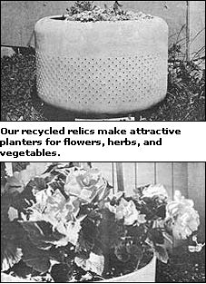

Some of our kindlier neighbors refer to us as "collectors" . . . but, considering the seemingly endless stream of salvaged items that follow us home, I think "accumulators" might be a more accurate term. Still, we always get good service from our found bounty . . . though doing so does sometimes present us with quite a challenge.
Not so long ago, for instance, my Ever-Lovin' brought home a truckbed of old washing machines that other folks had given up on. He set to work and salvaged a passel of good motors (which, as every handyperson knows, can always find a place around the shop or farm).
"But what," I asked, gazing at the leftover parts that were doing their best to help my neat back yard impersonate a hardware store struck by a cyclone, "are you going to do with all this?"
Well, my hubby scratched his chin a bit-just long enough to make me wonder whether he was really stumped-then grabbed some tools and set to work. First he removed the sheet metal screws holding the cabinets together (the separate sections of steel were relegated to the basement for future projects). Then he unscrewed the tips of the agitators, lifted those parts out, undid the nuts holding the agitator posts in place, and removed the tubs from the machines.
I was still a mite puzzled. "What, pray tell," I asked, "are we going to do with those? " It didn't take my recycler long to bring out a couple of cans of colorful spray enamel, and-still a little doubtful-I helped him spruce up the tubs.
Next, he picked a few choice spots on the lawn, set each metal basket on a brick base, filled the tubs with soil and compost, and presented me with a yardful of lovely planters . . . suitable for growing flowers, vegetables, or even a few "container" size dwarf fruit trees.
|
 |
|
|